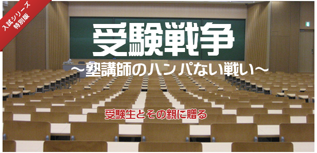

先日池村氏の記事（⇒倍率にビビッたら見るブログ～my受験シリーズ～）にもありましたが、塾の講師は毎年受験と戦っているというのは本当です。
「そりゃ、塾なんて受験のためにあるんでしょ。塾講師が受験に精を出すのって当り前じゃないの」と思ってるあなた。
あなたへひと言申し上げます！←なぜか切り口上（笑）
塾講師の戦い、すなわち教え子たちを合格へ導くための戦いはまさに命を削る激闘であります。
何のために？
もちろん教え子を合格させるために。
あなた：だからァ職務でしょ。
っていうか塾の評判につなげ経営の安定のためでしょ。
あるいは生徒をたくさん合格させたら先生の勤務評価につながるし査定もアップ…
私 ： 甘い！
我々はそんなハンパな心持ちで生徒たちと共に戦うのではない。←恐～
そうなのです。私たちが「この子たちを何が何でも合格させたい」と願う気持ちはハンパなく強いものです。
カッコつけて言うなら、講師としてのプライドと自らの存亡を賭けた闘いなのです。
今回はそんな「塾講師の戦い」について書いてみます。
受験期は塾も戦場と化す
生徒の行きたい学校と実力の差を埋めるための膨大な作業。
一人ひとりの進捗状況のチェックとアドバイス。
予想問題づくり。特訓や補習のテキストづくり。何より自信を失くしたり、不安に駆られている子どもへの心理的ケア。
このケアがもっとも大事。生徒の性格は一人ひとり違う。
その個性に応じて全員に違う対応をしなければならない。
講師の指導者としての力量はそこにかかっている。その子にもっとも適したアドバイスは？
それを求めて中3担当者の会議は深夜まで及ぶこともザラだ。
入試の数ヶ月前から毎日これらの“指導”に忙殺される講師たち。
時には一人の生徒の指導方針をめぐって、講師たちが激論を闘わすこともある。議論が白熱して互いにつかみ合いになることも。
そんな講師たちの「熱い気持ち」を和らげるため場所をファミレスに変えて、存分に話を聞くこともある
納得して互いに握手を交わし店を出る頃、東の空はすでに白く明けている。
このような光景は決して珍しいものではなく、私自身何度も経験してきた。
この30年間毎年くり返される受験期のおなじみの姿がそこにあります。
しかし話はこれで終わらない。
年が明けていよいよ入試が始まると、塾の空間も戦場と化す。
合否の連絡が昼といわず夜といわず間断なく入ってくる。
誰々は受かった。
誰々はダメだった。
その都度担当講師は対応に大ワラワとなる。
不合格だった生徒を塾に呼び出す。これからの対応を考えるためだが、精神的ショックを和らげ冷静に今やるべきことを考えさせ、もう一度気持ちを「闘うモード」に上げるためだ。ショックの大きい子はそのまま手許において自習させる。
子どもを家に帰さず一緒にいることがポイントとなる。
あえて深夜まで残し、生徒と色々話したりアドバイスするわけだが、
何時間か一緒にいることそのものが大事。
再び元気を取り戻せるかこの数時間にかかっている。ここでも講師の力量が問われる。
合格した生徒も呼び出す。まだ受験は終わったわけじゃない。気持ちを引き締め「カブトの緒」を締め直す。
生徒は始めに受かってしまうと一気にゆるみ、戦線を離脱してしまいがちなことをベテラン講師は知っているからだ。
ベテラン講師は自分の受け持ち以外にも、生徒たちの性格を把握して、各々の受け持ちである若手講師に指示を出す。
そこは時間との勝負。
一瞬の判断の遅れ、躊躇が命取りになる。
この時期、親の出る幕は正直言って全くない。
今や生徒が頼れるのは我々しかいないことを知っているからだ。
こうして我々は生徒たちの学力だけでなく、精神的なサポートの責任も全て背負う。その覚悟こそが生徒のモチベーションになる。
だからこの時期我々は睡眠時間を削ってでも持てるエネルギーの全てを生徒に注ぎ込む。
思春期の子どもたち。
彼らのモチベーションを高め維持するのは我々がどれだけエネルギーを込めたか、どれだけの情熱を注いだか、どれだけの労力をかけたのか、
そこにかかっているから。
純粋な情熱。
彼らを動かすのはそれしかない。
そこには利害得失のカケラもないというのが真相。
まさに塾講師の情熱 パねえ（笑）です。
塾講師の全力パワーが生徒の背中を押す
生徒たちにエネルギーをかければかけるほどその思いは彼らに伝わり、必ず結果となって返ってくる。
それが思春期の子どもたちの特徴であり、彼らと接する我々にとっても醍醐味でもあります。
入試直前になると、どの子も志望校に合格できる実力は大体ついているのです。
だから受かるかどうかは本番でその実力を100％発揮するか否かにかかっています。
そのためには最後のひと押し、背中を押してあげることが必要です。
そのひと押しができるかどうか、我々の心血を注ぐのがそこなのです。
今エネルギーを注ぐとか労力をかけると言ったのはまさに最後のひと押しに当たるわけですが、それはただ生徒に何かをやれば良いというのではありません。
直接働きかける外に、生徒の見えない所での我々の「頑張り」というのがあるのです。
見えない所での「頑張り」とは何か。
先に言った講師同士の白熱議論もそうだし、
親への報告もそう。
他にもあるのです。
私自身の経験からいうとこんなこともありました。
だいぶ昔の話。私立入試もほぼ終わりやるべきことは大体やり尽くしていた私は、最後のひと押しをどうするか考えていた。
そこで県立直前特訓と称して生徒を集め、休日にもかかわらず8時間ぶっ通しの授業をやった。
どうせやるなら面白くと、プリントにクラス全員の顔つきイラストを描いた。
彼らの顔をマンガ調にしてセリフも入れた。
これが大ウケ。皆喜んで問題を解いている。
どうやら私立入試で疲れのたまった彼らも元気が出たようで、夕方帰り際生徒たちは何やら口々に叫んでいる。
カンノ～ サイコー！ ←呼び捨てかよ（笑い）
と大声をあげて自転車で去って行くのです。←アホ？
そして迎えた県立入試の前日の夜。
さらに何かやることないかしつこく考えた末…
そうだ祈ろう！（笑）
私は部屋の照明を消しローソクに火を灯し、受け持ち生徒全員の名前を受験校別に書き出して祈った。
一人ひとり心を込めて、受かってくれと念じながら名前を書き連ねた。
想像してみて下さい。
深夜にローソクの灯の前で一心不乱に
生徒の名前を書きながら、一人ブツブツ唱えている姿
不気味ですよね。まるで八ツ墓村（笑）
とにかく朝までかかって全員の名を書き、顔を思い浮かべながら祈ったわけですが、
「こんなことしてただの自己満足じゃないのか」と疑念にも襲われた。
でも何かにつき動かされていた。生徒のためにできることは全てやる。そんな感じでしたね。
色紙じゃないのに色紙渡し？
結果はその甲斐あってか、近隣で最難関の県立T高校に過去最多の合格！ 2番手のK高校にも最多合格！
やはり思いは伝わるのです。こちらも最後まであきらめずエネルギーを注ぐことが大切なのだ。
そう実感しました。
だから翌年から講師たち皆に呼びかけて生徒たち全員に励ましの言葉を書くようにしました。
県立受験日の前日夜に中3全員を塾に呼び集めそれ―手紙ではなく色紙―を渡したのです。
入試の前日。それも夜に集めるなど生徒の健康管理を考えたら効率的とは思えないけど、ここは我々の「合格への執念」を伝える最後のひと押しと思い強行。
ちなみに、その色紙は色紙と呼んでいるけれど実際はコピー用紙を使った粗末なもの。つまり寄せ書き。
講師全員が徹夜して100人もの生徒に心を込めて励ましの言葉を書く。この思いとエネルギーが伝わらないわけがない。そう思ったからです。
当日、生徒一人ひとりの名前を読み上げ渡していく。生徒たちは照れくさそうにそれでも興味深げに手に取り、食い入るように読んでいる…。
果たして効果は絶大でした。
読む生徒たちの顔はみるみる紅潮し、感激のあまり涙ぐむ者、お互い色紙を見せ合い笑いこける者、皆が嬉しさを爆発させている姿は圧巻というに値するものでした。部屋は阿鼻叫喚（？）の様相(笑)。
以来私の塾ではこの「色紙渡し」が今にも伝わる伝統となり、最近では講師だけでなく事務スタッフも加わっています。
今年もこの感動の光景がくり広げられるでしょう。
生徒の中には20年たった今でもこの「色紙」を大切に保管している人がいるらしく、私たちの思いが合否を越えて、今も生徒とつながっているのだと実感しています。
「色紙」はひとつの例に過ぎません。生徒のモチベーションを引き出すやり方は講師各々が「裏ワザ」として、ここぞという時に発揮する「武器」なのです。
今日もまた最後の入試に向けて塾講師たちの戦いは続きます。
教え子たちを合格させる。
塾講師はプライドとエネルギーをかけて戦っていることでしょう。
今年はどんな感動の「色紙渡し」が行われるのか。
いや、生徒を合格に導くためどんな「ひと押し」が講師たちの情熱によって行われるのか。
受験の最前線から離れた私にとっても楽しみであり、気がかりでもあるのです。